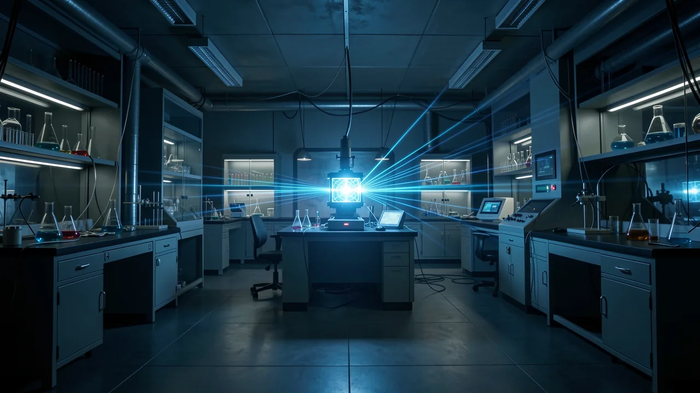

Le tour de magie des 3 masses solaires
Lorsque deux trous noirs sont entrés en collision, une partie importante de leur masse a disparu, se transformant en ondes d’énergie pures que nous pouvons réellement ressentir.

- Two black holes merged, leaving behind a single black hole.
- Three solar masses were converted directly into gravitational energy.
- Gravitational waves allow us to 'hear' cosmic events invisible to light.
- The event confirms the power of Einstein's mass-energy equivalence.
Imaginez que vous êtes assis dans une pièce très calme et très luxueuse en Louisiane. Nous sommes en 2015, et vous fixez un écran où ne s’affichent que des interférences et le silence. Soudain, les capteurs tressaillent. Ce n’est pas un camion qui passe, et ce n’est pas un tremblement de terre isolé. C’est une minuscule vibration microscopique qui traverse la trame même de la réalité, provenant d’un endroit si lointain que même la lumière mettrait un milliard d’années à nous atteindre. Ce n’était pas un bug dans la matrice, c’était le son de l’univers qui se brise.

La disparition cosmique
En février 2016, la collaboration LIGO a fait une annonce fracassante. Elle a révélé que deux trous noirs massifs – l’un ayant une masse environ 36 fois supérieure à celle de notre Soleil, l’autre 29 fois supérieure – avaient décidé de fusionner. En général, lorsqu’on combine des éléments, on s’attend à ce que la somme des parties soit égale au tout. Si l’on combine deux poids de 1 livre, on obtient 2 livres, à moins qu’on ne soit un physicien rancunier.
Mais lors de cette collision cosmique, quelque chose d’étrange s’est produit. Le trou noir résultant n’avait qu’une masse de 6 à 2 fois celle du Soleil. Où sont allées les 3 masses solaires restantes ? Elles ne se sont pas simplement évaporées ou cachées dans un paradis fiscal cosmique. Elles ont été converties en énergie pure, grâce à la célèbre équation d’Einstein. Formule E = mc², qui se propagent vers l’extérieur sous forme d’ondes gravitationnelles.
La fusion a libéré une quantité d’énergie équivalente à celle de trois soleils entiers, et ce, en un seul instant éphémère.
Cela représente l’équivalent de la matière contenue dans trois soleils entiers, transformée en une simple ondulation dans l’espace-temps. Pour donner une idée de l’ampleur, c’est plus d’énergie libérée en une fraction de seconde que toute l’énergie émise par toutes les étoiles de l’univers observable au cours de leur existence. Cela donne l’impression qu’une supernova n’est qu’un simple pétard qui ne fait que fumer.

Des ondes, et pas seulement des particules
Cela nous amène à la grande question, qui mérite réflexion : cela prouve-t-il la dualité onde-particule ? Si vous avez passé du temps en cours de physique au lycée, vous vous souvenez sans doute de ce concept déroutant selon lequel la lumière peut se comporter à la fois comme une onde (se déplaçant dans l’espace) et comme une particule (un paquet discret d’énergie appelé photon). C’est la crise d’identité ultime du monde subatomique.
Lorsque nous parlons de… ondes gravitationnellesNous parlons ici de la dilatation et de la contraction de l’espace lui-même. Il s’agit d’une onde au sens le plus littéral du terme, une perturbation qui se propage dans un milieu (bien que le « milieu » en question soit l’espace-temps lui-même, ce qui pose un véritable problème philosophique).
Quel est l’intérêt pour votre cerveau ?
Alors, est-ce la preuve de la dualité ? C’est compliqué. Bien que la détection confirme que la gravité se propage sous forme d’onde, l’aspect « particulaire » de l’équation – le « graviton » théorique – reste l’élément le plus insaisissable de ce domaine. Nous pouvons observer l’onde, mais nous n’avons pas encore réussi à « capturer » la particule. En substance, nous observons les ondulations sur une surface d’eau, mais nous n’avons pas encore vu une seule gouttelette d’eau se déplacer de manière indépendante.
Pourquoi devriez-vous vous y intéresser ? Parce qu’il ne s’agit pas seulement de rendre les trous noirs plus fascinants. Comprendre ces ondulations nous permet d’utiliser l’univers comme un laboratoire. Nous passons de l’époque où nous « observions » l’univers à l’aide de la lumière à celle où nous l’« écoutons » grâce à la gravité. C’est la différence entre regarder un film muet et assister à un concert de heavy metal.
détecter les ondes gravitationnelles Cela nous permet d’observer des événements totalement invisibles pour les télescopes traditionnels. C’est un nouveau sens pour l’humanité. Nous sommes enfin en train d’affiner notre capacité à percevoir les vibrations de basse fréquence de l’univers, même si nous ne parvenons toujours pas à expliquer pourquoi l’univers a tendance à projeter l’équivalent de trois masses solaires dans le néant au moment d’une collision.
La prochaine fois que vous aurez l’impression que votre vie est un peu chaotique, rappelez-vous simplement ceci : au moins, vous n’êtes pas un trou noir qui perd trois masses solaires de son identité à cause d’une ondulation cosmique.
Répondez au questionnaire associé à cette histoire et voyez votre résultat.
Participez au quiz.Créez un compte DeepSage gratuit pour enregistrer des articles, suivre les résultats de vos tests et recevoir en avant-première le résumé quotidien.
Vous pourriez également aimer.